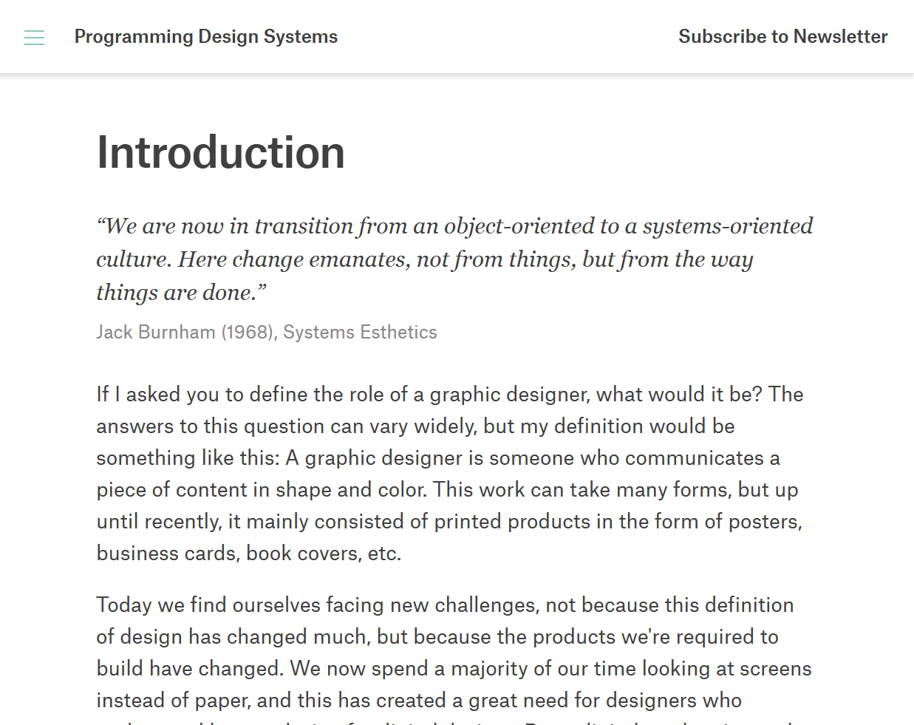
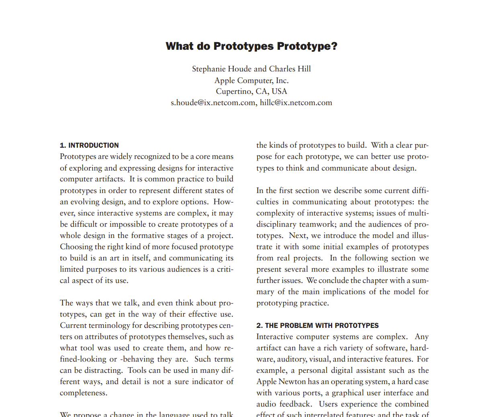
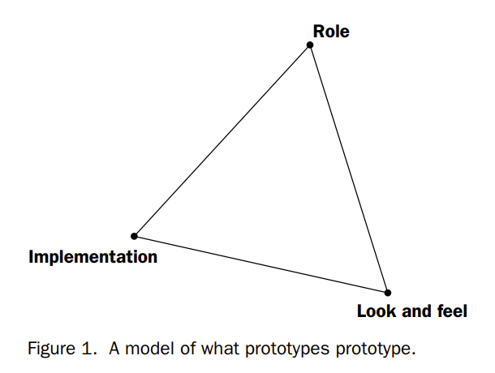

Roxanna's Week 6 Reading Homework
For this week's class we had two readings to review:
• What do Prototypes Prototype?
We had to select 3 quotes from each reading and provide our thoughts.
Programming Design Systems

1. "Furthermore, digital products often have temporal logic where a linear narrative is replaced by a set of complex states and transitions."
Answer: The idea that print products have a linear narrative while digital products have a set of complex states and transitions is something I find so true. Having worked in the field of robotics many of the systems I designed were very complex and required our team to design for a multitude of features. When designing our programs there was never a linear way to approach each system. Instead we often found ourselves making improvements or iterations throughout the timeline of the project in an ad hoc manner.
2. "Second, code enables designers to do things they couldn't do before. Variations of a design can be tested much faster during the prototyping phase, and randomization can be used to reveal designs that the designer would never have created with a pencil."
Answer: Providing designers nowadays with the necessary knowledge of coding helps designers not only better understand what it takes to build a program, but also allows designers to create their designs and see what is feasible. Often times whenever I would work with development teams, discussions would lead to compromise on what designs could actually be made.
3. "There is a need for educational material that teaches the fundamentals of graphic design in a modern way, especially if it also gives students mental models for critiquing digital design projects."
Answer: With technology evolving as fast as it is we need to provide designers with the updates tools and materials to set them up for success. While basic fundamentals are important critiquing digital design projects requirements a slightly different approach.
What Do Prototypes Prototype?

1. "Prototypes provide the means for examining design problems and evaluating solutions. "
Answer: Having worked on numerous prototypes throughout my career, having users test out designs is one of the most important parts of UX design. It’s really a moment where we as designers get to witness first hand how user perceive the design, if it is successful, and if there are any issues with it.
2. "The Model"

Answer: Prior to this reading I never considered the how to describe what exactly is needed when designing an interactive artifact. But “the model” — as shown above — perfectly illustrates that. "Role" representing the function an artifact serves a user, "look and feel" representing the questions about the sensory experience when using the artifact, and "implementation" being the "nuts and bolts" that refer to the techniques and components through which it functions.